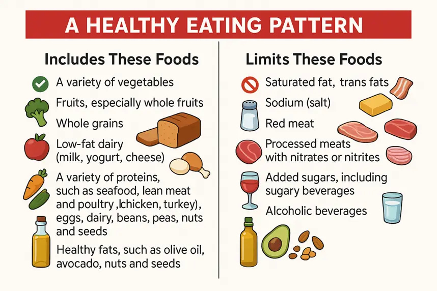

Deep Breathing Exercises
Diaphragmatic Breathing (Abdominal Breathing)
VIDEO
- Sit or lie down comfortably.
-
Place one hand on your chest and the other on your abdomen.
-
Inhale deeply through your nose for a count of 4, allowing your
abdomen to rise (not your chest).
- Hold the breath for a count of 2.
- Exhale slowly through your mouth for a count of 6.
- Repeat for 5–10 minutes.
Benefits: Helps in focusing the mind and reducing
anxiety, which can lower pain perception.
Pursed-Lip Breathing VIDEO
- Inhale slowly through your nose for about 2 seconds.
- Purse your lips like you’re about to whistle.
- Exhale slowly through pursed lips for 4 seconds.
- Repeat for 5–10 minutes.
Benefits: Enhances oxygen exchange, useful for
people with chronic pain and respiratory conditions.
4-7-8 Breathing VIDEO
- Inhale through your nose for 4 seconds.
- Hold your breath for 7 seconds.
- Exhale slowly through your mouth for 8 seconds.
- Repeat 4–8 times.
Benefits: Induces deep relaxation and lowers
pain-related stress.
Distraction Therapies
-
Listening to Music VIDEO 1
-
Engage in Drawing VIDEO 2
- Gardening VIDEO 3
Benefits: Distraction therapies help reduce pain
perception and emotional distress in cancer patients by redirecting
attention and enhancing coping skills.
Nutrition Support
DISCLAIMER: The dietary tips and suggestions
provided in MedPANDA are for general guidance and supportive care
only. They are not intended to replace personalized dietary plans
prescribed by a qualified dietician or healthcare professional.
Patients should always follow the diet recommended by their
dietician based on their individual medical condition and
nutritional needs. Use this information as an adjunct resource, not
a substitute for professional advice.
-
Focus on small frequent meals with high-calorie and protein-rich
food (Nuts, cheese, yogurt, eggs, beans and peas, dal).
-
Eat vegetables, fruits, whole grains, and beans and other foods
that are high in fiber to help you feel full.

Pain Warning
⚠️ Warning: If the pain is severe, then seek immediate medical
attention.